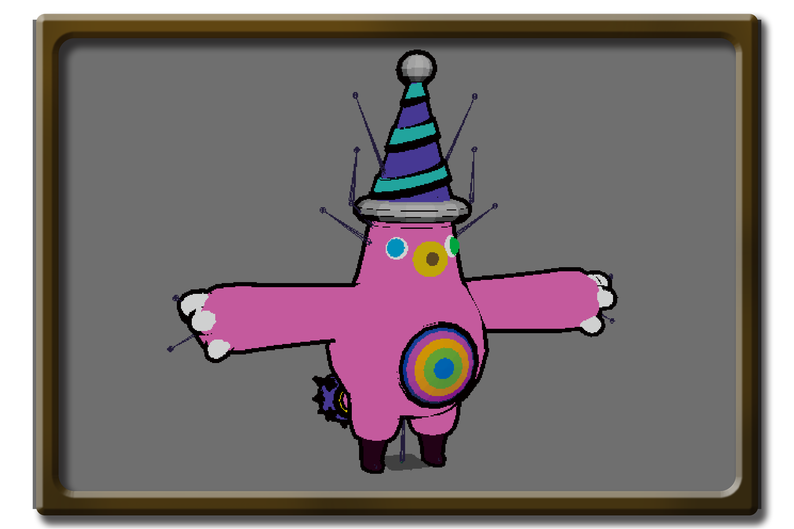
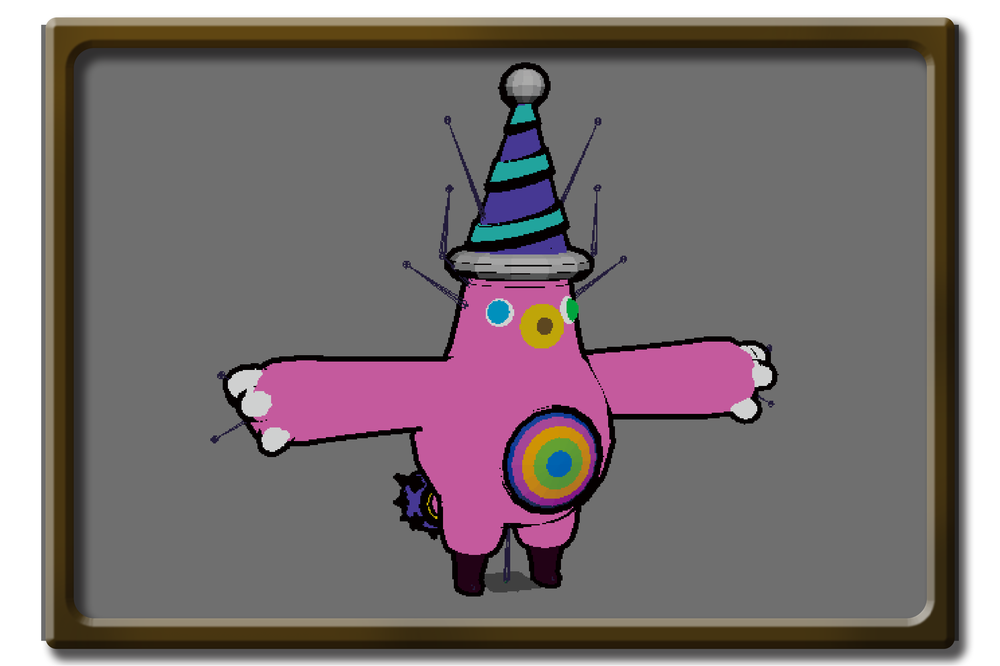
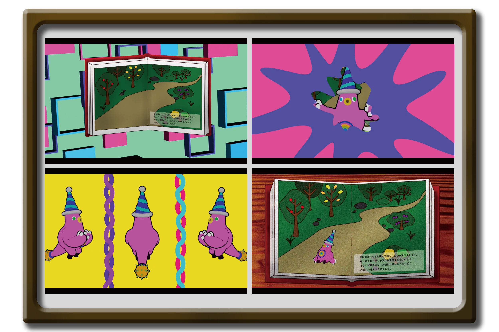

Monster Story
2021/6/11-2021/7/23
animation
モーションキャプチャを利用して製作したポップなアニメーション動画です。
CorTex MotionBuilder Maya AfterEffect PremierePro
Concept
絵本の世界の悪者である怪獣が絵本の世界から飛び出してくるというストーリーです。 絵本の世界の中で怪獣が退治される前日のまだ怪獣が優勢である世界での怪獣による 最後の宴をモチーフにしました。

 


モーションデータを取り、CorTexでマーカーの修正をしました。３Dモデルは UnityAssetから持ってきて、絵本の中の世界というコンセプトに合うようMayaで 新たにテクスチャ付けをしました。MotionBuilderで３Dモデルを修正したモーションを紐付け、 腕のめり込みなどの動きを修正しました。

並みのエフェクトは全て手作りです。
‹ prev

next ›